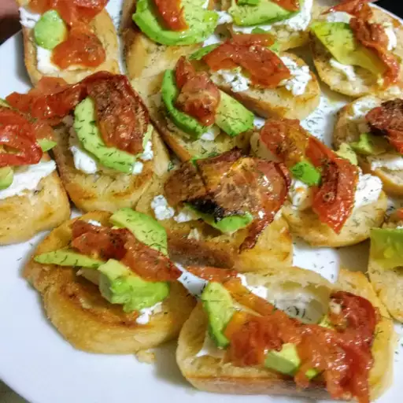
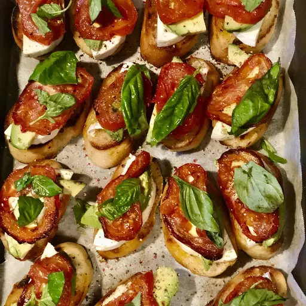
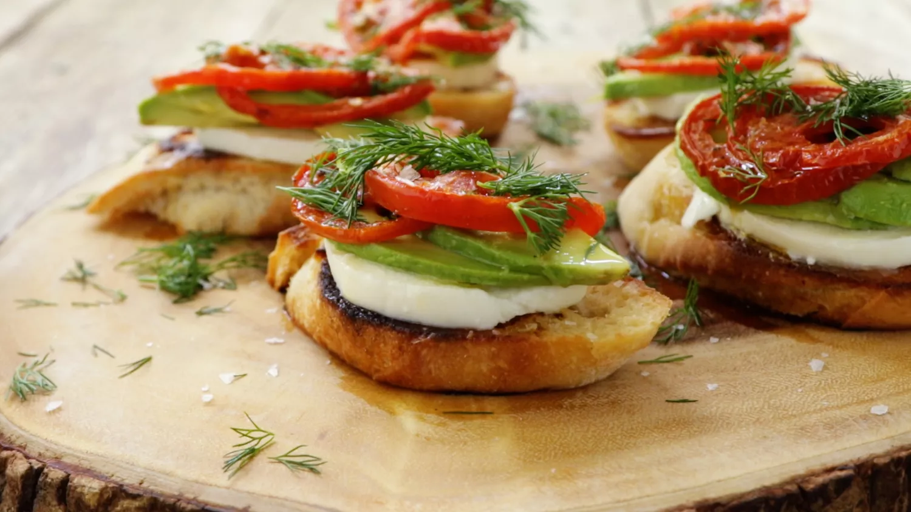

Roasted Tomato, Avocado, and Fresh Mozzarella Crostini

Ingredients
- 2 vine-ripened tomatoes, cut into 1/4-inch slices
- ¼ cup extra-virgin olive oil, divided
- Sea salt and freshly ground black pepper to taste
- 2 tablespoons butter
- 8 diagonally sliced pieces baguette
- 1 clove garlic, halved
- 8 ounces fresh mozzarella cheese, cut into 8 thin slices
- 1 large avocado - halved, pitted, and thinly sliced
- ½ small lemon
- ¼ cup roughly chopped fresh dill
- 1 pinch flaked salt

Directions
-
Step 1
Preheat oven to 450 degrees F (230 degrees C). Line a baking sheet with parchment paper.
-
Step 2
Arrange tomato slices on the baking sheet and top with about 3 tablespoons olive oil, sea salt, and pepper.
-
Step 3
Roast in the preheated oven until tomatoes are wilted, wrinkly, and scorched in some places, 25 to 30 minutes. Set aside to cool.
-
Step 4
Heat butter in a large skillet over medium heat. Place bread slices in the skillet and cook until crisp and golden in parts, 2 to 3 minutes per side.
-
Step 5
Remove bread from skillet and rub garlic onto each slice; sprinkle sea salt over bread.
-
Step 6
Layer mozzarella cheese on the toasted bread and top with avocado slices. Sprinkle sea salt over avocado and squeeze lemon over it. Top with roasted tomatoes and dill. Drizzle remaining 1 tablespoon olive oil over crostini and sprinkle with flaked salt.
